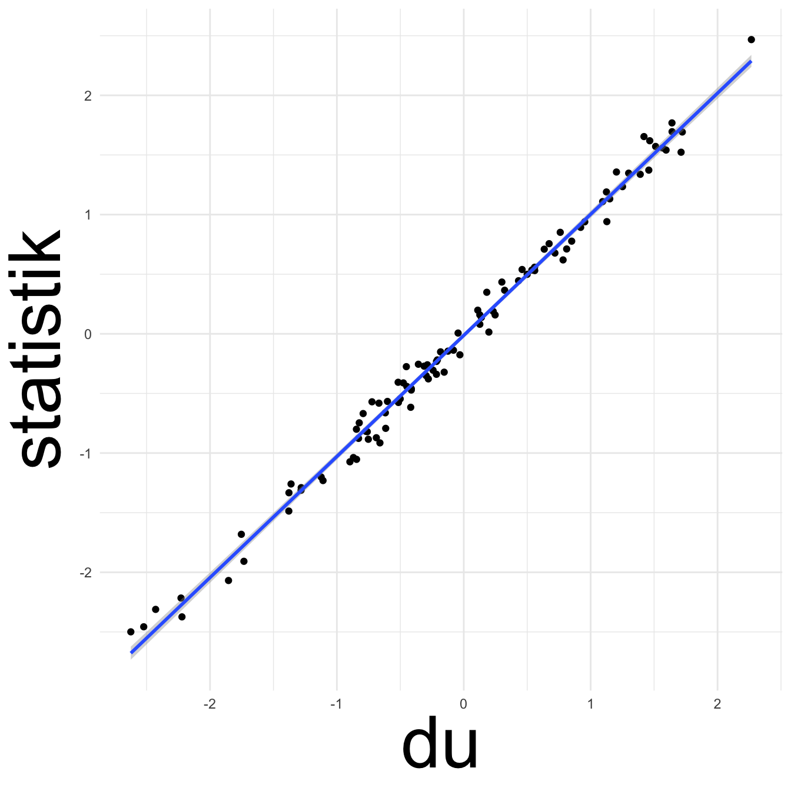

Statistik1
Ein Einführungskurs in die Statistik mit einem Schwerpunkt auf Prognosemodellierung
Sebastian Sauer ![]()
1 Willkommen!
1.1 Es geht um Ihren Lernerfolg
Meister Yoda rät: Lesen Sie die Hinweise (Abbildung 1.1).

Quelle: Imgflip Memengenerator
1.1.1 Lernziele
Die Studentis sind mit wesentlichen Methoden der explorativen Datenanalyse vertraut und können diese selbständig anwenden.
Die Studentis können gängige Forschungsfragen in lineare Modelle übersetzen, diese auf echte Datensätze anwenden und die Ergebnisse interpretieren.
Kurz gesagt: Das ist ein Grundkurs in Daten zähmen.

1.1.2 Was lerne ich hier und wozu ist das gut?
Was lerne ich hier?
Sie lernen das Handwerk der Datenanalyse mit einem Schwerpunkt auf Vorhersage. Anders gesagt: Sie lernen, Daten aufzubereiten und aus Daten Vorhersagen abzuleiten. Zum Beispiel: Kommt ein Student zu Ihnen und sagt “Ich habe 42 Stunden für die Klausur gelernt, welche Note kann ich in der Klausur erwarten?”. Darauf Ihre Antwort: “Auf Basis meiner Daten und meines Modells müsstest du eine 2.7 schreiben!”.1. Außerdem lernen Sie, wie man die Güte einer Vorhersage auf Stichhaltigkeit prüft. Denn Vorhersagen kann man ja in jeder Eckkneipe oder beim Wahrsager bekommen. Wir wollen aber belastbare Vorhersagen und zumindest wissen, wie gut die Vorhersagen (von jemanden) bisher waren.
Warum ist das wichtig?
Wir wollen nicht auf Leuten vertrauen, die behaupten, sie wüssten, was für uns richtig und gut ist. Wir wollen selber die Fakten prüfen können.
Wozu brauche ich das im Job?
Datenanalyse spielt bereits heute in vielen Berufen eine Rolle. Tendenz stark zunehmend.
Wozu brauche ich das im weiterem Studium?
In Forschungsarbeiten (wie in empirischen Forschungsprojekten, etwa in der Abschlussarbeit) ist es üblich, statistische Ergebnisse hinsichtlich quantitativ zu analysieren.
Ist Statistik nicht sehr abstrakt?
Der Schwerpunkt dieses Kurses liegt auf Anwenden und Tun; ähnlich dem Erlernen eines Handwerks. Theorien und Abstraktionen stehen nur am Rand.
Gibt es auch gute Jobs, wenn man sich mit Daten auskennt?
Das Forum (2020) berichtet zu den “Top 20 job roles in increasing and decreasing demand across industries” (S. 30, Abb. 22):
- Data Analysts und Scientists
- AI and Machine Learning Specialists
- Big Data Specialists
1.1.3 Was ist hier das Erfolgsgeheimnis?
Wichtig
Dran bleiben ist der Schlüssel zum Erfolg. Üben Sie regelmäßig. Geben Sie bei Schwierigkeiten nicht auf. 🏋️♂️🔁🔑🎯✨ \(\square\)
1.1.4 Motivieren Sie mich!
Schauen Sie sich das Video mit einer Ansprache zur Motivation an.2
1.1.5 Voraussetzungen
Um von diesem Kurs am besten zu profitieren, sollten Sie Folgendes mitbringen:
- Bereitschaft, Neues zu lernen
- Bereitschaft, nicht gleich aufzugeben
- Kenntnis grundlegender Methoden wissenschaftlichen Arbeitens
Was Sie nicht brauchen, sind besondere Mathe-Vorkenntnisse.
1.1.6 Überblick
Abb. Abbildung 1.2 gibt einen Überblick über den Verlauf und die Inhalte des Buches. Das Diagramm hilft Ihnen zu verorten, wo welches Thema im Gesamtzusammenhang steht.
flowchart LR
subgraph R[Rahmen]
direction LR
subgraph V[Vorbereiten]
direction TB
E[Einlesen] --> Um[Umformen]
end
subgraph M[Modellieren]
direction TB
M1[Verbildlichen] --> Vis[Punktmodelle]
Vis --> U[Modellguete]
U --> G[Geradenmodelle]
end
subgraph N[Nachbereiten]
direction TB
D[Diskutieren]
end
V --> M
M --> N
end
Das Diagramm zeigt den Ablauf einer typischen Datenanalyse. Natürlich kann man sich auch andere sinnvolle Darstellungen dieses Ablaufs vorstellen.
1.1.7 PDF-Version
Sie können die Druck-Funktion Ihres Broswers nutzen, um ein PDF-Dokument eines Kapitels dieses Buchs zu erstellen.
1.2 Software
Sie benötigen R, RStudio und einige R-Pakete für diesen Kurs.
1.2.1 Installation
1.2.2 Viel R (?)
Dieses Buch enthält “mittel” viel R. Auf fortgeschrittene R-Techniken wurde aber komplett verzichtet. Dem einen oder der anderen Anfänger:in mag es dennoch “viel Code” erscheinen. Es wäre ja auch möglich gewesen, auf R zu verzichten und stattdessen eine “Klick-Software” zu verwenden. JASP oder Jamovi sind Beispiele für tolle Software aus dieser Kategorie. Ich glaube aber, der Verzicht auf eine Skriptsprache (R) wäre ein schlechter Dienst an den Studentis. Mit Blick auf eine “High-Tech-Zukunft” sollte man zumindest mit etwas Computer-Code vertraut sein. Auf Computercode zu verzichten erschiene mir daher fahrlässig für die “Zukunftsfestigkeit” der Ausbildung.

1.3 Hinweise
Der Unterricht zu diesem Modul wird id.R. nur ein Mal pro Jahr angeboten (also nur jedes zweite Semester).
Eine Prüfung in diesem Modul ist jedes Semester möglich.
1.4 Prüfung
Beachten Sie die Hinweise zum prüfungsrelevanten Stoff.4
Im Hinweisbuch finden Sie [Hinweise zur Prüfung]((https://hinweisbuch.netlify.app/080-hinweise-pruefung-prognosewettbewerb-frame).5
1.5 Zum Autor
Nähere Hinweise zum Autor dieses Buch, Sebastian Sauer, finden Sie hier.6 Dort gibt es auch einen Überblick über weitere Bücher des Autors zum Themenkreis Datenanalyse.7
1.6 Nomenklatur
1.6.1 Farben
In Gleichungen werden zum Teil Farben verwendet, diese haben folgende Bedeutung:
- Y bzw. Abhängige Variable
- X bzw. Unabhängige Variable
- e bzw. Fehlerterm
- b0 bzw. Achsenabschnitt
- b1 bzw. Steigung (Regressionsgewicht)
- m bzw. y-Dach bzw. Modellwert
In Diagrammen werden auch Farben verwendet, die haben allerdings keine feste Bedeutung, sondern dienen der Übersichtlichkeit.
1.6.2 Griechische Buchstaben
In diesem Buch werden ein paar (wenige) griechische Buchstaben verwendet, die in der Statistik üblich sind.
Häufig werden griechische Buchstaben verwendet, um eine Grundgesamtheit (Population) zu beschreiben (die meistens unbekannt ist). Lateinische (“normale”) Buchstaben werden demgegenüber verwendet, um eine Stichprobe (Datensatz, vorliegende Daten) zu beschreiben.
Tabelle 1.1 stellt diese Buchstaben zusammen mit ihrer Aussprache und Bedeutung vor.
| Zeichen | Aussprache | Buchstabe | Bedeutung in der Statistik |
|---|---|---|---|
| \(\beta\) | beta | b | Regressionskoeffizent |
| \(\mu\) | mü | m | Mittelwert |
| \(\sigma\) | sigma | s | Streuung |
| \(\Sigma\) | Sigma | S | Summenzeichen |
| \(\rho\) | rho | r | Korrelation (nach Pearson) |
Mehr griechische Buchstaben finden sich z.B. in Wikipedia.
1.7 Zitation
Bitte zitieren Sie dieses Buch wie folgt:
Sauer, S. (2024). Statistik1. https://statistik1.netlify.app/
Hier sind die maschinenlesbaren Zitationsinfos (Bibtex-Format), die Sie in Ihre Literatursoftware importieren können:
@book{sauer_statistik1,
title = {Statistik1},
rights = {CC-BY-NC},
url = {https://statistik1.netlify.app/},
author = {Sauer, Sebastian},
date = {2024},
}Hier ist die DOI:

1.8 Reproduzierbarkeit
Die verwendeten R-Pakete sind mit renv dokumentiert.8
Der Quellcode ist in diesem Github-Repo dokumentiert.9
Dieses Dokument wurde erzeugt am/um 2024-06-21 17:48:17.729891.